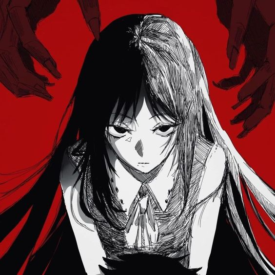

Cadenas del Destino
En una ciudad moderna donde la tecnología y la magia coexisten, dos mundos chocan de una manera inesperada. En este escenario vibrante, conocemos a Hiroki, un estudiante de secundaria aparentemente común pero con un oscuro secreto: es un descendiente de una antigua línea de guerreros mágicos. Un día, mientras intenta proteger a un amigo de un ataque sorpresa de criaturas sobrenaturales, conoce a Akari, una misteriosa joven con habilidades mágicas extraordinarias.
Akari, también con su propio linaje mágico, está en una búsqueda personal para desentrañar la verdad detrás de la desaparición de sus padres, quienes eran renombrados cazadores de criaturas oscuras. Juntos, Hiroki y Akari descubren que sus destinos están entrelazados por fuerzas más allá de su comprensión, y que la ciudad está al borde de un conflicto mágico que podría cambiar el curso de la historia.
A medida que luchan contra enemigos formidables, Hiroki y Akari desarrollan una conexión especial.
Aunque al principio se resisten a aceptar sus sentimientos, la intensidad del conflicto y las situaciones peligrosas los acercan cada vez más. Mientras desentrañan los misterios de sus linajes y la verdad detrás de la amenaza que se cierne sobre la ciudad, también descubren la importancia de confiar el uno en el otro.
La tensión alcanza su punto álgido cuando descubren que la clave para salvar su mundo está en la fusión de sus poderes mágicos.
Juntos, desatan un poder combinado que supera cualquier cosa que hayan enfrentado antes. Sin embargo, este acto también despierta una antigua maldición que amenaza con separarlos para siempre.
En el clímax de la batalla, Hiroki y Akari deben tomar decisiones difíciles para salvar a la ciudad y deshacer la maldición que los separa. En un acto de valentía y amor, logran superar las adversidades y restaurar la paz.
Aunque su camino está lleno de sacrificios, descubren que la fuerza de su vínculo es suficiente para superar cualquier obstáculo.
La historia concluye con Hiroki y Akari contemplando el horizonte de una ciudad en reconstrucción, sabiendo que su amor resistió las pruebas del tiempo y la magia, y que un nuevo capítulo en sus vidas está por comenzar.